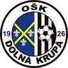

U13 mladší žiaci
IV. liga mladších žiakov ObFZ Trnava · 9. miesto z 10

- 1výhier
- 0remíz
- 8prehier
- 12:48skóre
Program
-
17. 4.so · 10:30
Match daySFC Kopánka Bvonku · 10. kolo

-
24. 4.so · 10:30
Match dayTJ Družstevník Dechticedoma · 11. kolo

-
1. 5.so · 10:30
Match dayOŠK Dolná Krupávonku · 12. kolo

-
8. 5.so · 10:30
Match dayŠPORTOVÉ KLUBY BLAVA 1928doma · 13. kolo

-
15. 5.so · 10:30
Match dayTJ FC Kátlovcevonku · 14. kolo

-
22. 5.so · 10:30
Match dayTJ Iskra - Horné Orešanydoma · 15. kolo

-
29. 5.so · 10:30
Match dayTJ Družstevník Zvončínvonku · 16. kolo

-
5. 6.so · 10:30
Match dayTJ Sokol Trstíndoma · 17. kolo

-
12. 6.so · 10:30
Match dayOŠK Smolenicevonku · 18. kolo

Výsledky
-
Fulltime
Prehra, 2:9
OŠK Smolenice
24. 10. · doma · 9. kolo
-
Fulltime
Výhra, 3:5
TJ Sokol Trstín
17. 10. · vonku · 8. kolo
-
Fulltime
Prehra, 1:4
TJ Družstevník Zvončín
10. 10. · doma · 7. kolo
-
Fulltime
Prehra, 4:0
TJ Iskra - Horné Orešany
3. 10. · vonku · 6. kolo
-
Fulltime
Prehra, 1:8
TJ FC Kátlovce
26. 9. · doma · 5. kolo
-
Fulltime
Prehra, 8:1
ŠPORTOVÉ KLUBY BLAVA 1928
19. 9. · vonku · 4. kolo
- Fulltime Prehra, 0:1 OŠK Dolná Krupá 12. 9. · doma · 3. kolo
-
Fulltime
Prehra, 1:0
TJ Družstevník Dechtice
5. 9. · vonku · 2. kolo
-
Fulltime
Prehra, 2:10
SFC Kopánka B
29. 8. · doma · 1. kolo
Tabuľka
IV. liga mladších žiakov ObFZ Trnava
| Poradie | Tím | Z | V | R | P | Skóre | B |
|---|---|---|---|---|---|---|---|
| 1 | 9 | 8 | 1 | 0 | 59:6 | 25 | |
| 2 | 9 | 7 | 0 | 2 | 43:15 | 21 | |
| 3 | 9 | 6 | 1 | 2 | 43:11 | 19 | |
| 4 | 9 | 6 | 1 | 2 | 39:16 | 19 | |
| 5 | 9 | 4 | 3 | 2 | 40:17 | 15 | |
| 6 | 9 | 4 | 1 | 4 | 30:28 | 13 | |
| 7 | OŠK Dolná Krupá | 9 | 2 | 2 | 5 | 13:21 | 8 |
| 8 | 9 | 2 | 1 | 6 | 14:24 | 7 | |
| 9 | 9 | 1 | 0 | 8 | 12:48 | 3 | |
| 10 | 9 | 0 | 0 | 9 | 4:111 | 0 |
Súpiska
Hráči, ktorí v roku 2026 nastúpili alebo boli v nominácii (Sportnet). Pri mládeži uvádzame len mená.
Brankári
- Šimon Banci, číslo 1
- Filip Franko, číslo 22
Obrancovia
- Ema Belobradová
- Aleš Benko
- Lukáš Holbík
- Alica Kavická, číslo 6
- Dominik Korniet
- Ľubomír Moskáľ, číslo 10
- Ján Nemček, číslo 4
- Viktoria Petrovičová, číslo 5
- Šimon Špaček
- Šimon Vadovič, číslo 8
Stredopoliari
- Michal Daniš, číslo 7
- Dávid Chynoranský, číslo 11
- Juraj Lančarič
- Simon Mikulka
- Oliver Sanny
- Lukas Vittek, číslo 3
- Adam Vrlák
Útočníci
- Oliver Bacák
- Martin Drobný
- Jakub Hubinský
- Oliver Miklošovič, číslo 15
- Sofia Petrovičová, číslo 13
- Alexander Piešťanský
- Samuel Polakovič, číslo 12
- Lucas Šarmír
- František Zrebný, číslo 14
Realizačný tím
- TrénerMarek Daniš
- Vedúci mužstvaIvan Palšovič
- LekárRastislav Nemček